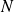

Partie IV : Simulation du mouvement des planètes
Cette partie correspond à la question IV.C du sujet original illustré avec l'éclipse du soleil du 20 mars 2015. L'exploitation de la base de données est reportées dans la partie V suivante.
On dispose des variables python t0, p0, v0 et masse initialisées à partir du résultat de la requête précédente.
t0 est un entier qui donne la date des conditions initiales : il correspond à et à tmin().
p0 est une liste de longueur  , chaque élément de p0 est une liste à 3 éléments de la forme [x, y, z] représentant la position initiale d'un corps, en unité astronomique.
v0 a une structure identique mais indique les vitesses initiales des corps considérés, en km/s. masse est décrite en partie III.
Question
Écrire la fonction python simulation_verlet(delta_t, n) qui prend en paramètre un incrément de temps en secondes (delta_t > 0)et un nombre d'itérations (n > 0) et qui renvoie la liste des positions des corps considérés pour chaque instant t0, t0 + deltat, ..., t0 + n*delta_t (cf. variable position définie en partie III). Les calculs seront menés en utilisant le schéma d'intégration de Verlet, le résultat sera fourni en unité astronomique.
Attention aux unités !
Le sujet induisait d'utiliser les variables t0, p0, v0 et masse comme des variables globales puisque ces variables étaient absentes de la liste des arguments de la fonction à construire. Je ne vais pas suivre cette indication critiquable.
Ensuite, la variable t0 n'était pas utile.
def simulation_verlet(p0, v0, masse, delta_t, n):
'''renvoie la liste des positions des corps consideres pour chaque instant.Les calculs seront menes en utilisant le schema d'integration de Verlet,le resultat sera fourni en unite astronomique.''' # Conversion des positions et vitesses initialesua, km = 1.5e11, 1e3 # constantes de conversion ua -> m et km/s -> m/s
p0_conv = [ut.smul(ua, pos) for pos in p0]
v0_conv = [ut.smul(km, vit) for vit in v0]
res_pos = [p0_conv] # initialisation de la liste a renvoyer, p0 en ua
vitesses = [v0_conv] # initialisation de la liste a renvoyer, v0 en km/s
for instant in range(1, n):
(pos_i, vit_i) = etat_suiv(masse, res_pos[instant - 1], \
vitesses[instant - 1], delta_t)
res_pos.append(pos_i)
vitesses.append(vit_i)
# Conversion des positions avant leur renvoires_pos = [[ut.smul(1 / ua, pos) for pos in positions] \
for positions in res_pos]
return res_pos
Complément :
Voici le module complet avec toutes les fonctions permettant de traiter ce problème à N corps.
Question
Mettre en application sa fonction avec les conditions initiales du 28 mars 2015.
Tracer alors les trajectoires du Soleil, de la Terre et de la Lune lors d'une année terrestre.
Avec les éléments de réponse de la partie III.
Positions = simulation_verlet(Pos_ini, Vit_ini, Masses, delta_t, n)
## Trace des trajectoiresn_positions = len(Positions)
n_astres = len(Positions[0])
X_Soleil = [Positions[k][0][0] for k in range(n_positions)]
Y_Soleil = [Positions[k][0][1] for k in range(n_positions)]
plt.plot(X_Soleil, Y_Soleil, 'red')
X_Terre = [Positions[k][1][0] for k in range(n_positions)]
Y_Terre = [Positions[k][1][1] for k in range(n_positions)]
plt.plot(X_Terre, Y_Terre, 'blue')
X_Lune = [Positions[k][2][0] for k in range(n_positions)]
Y_Lune = [Positions[k][2][1] for k in range(n_positions)]
plt.plot(X_Lune, Y_Lune, 'grey')
plt.title('Trajectoires')
plt.show()
Sur ce dernier tracé, il est possible d'observer le très bon comportement de l'algorithme de Verlet pour cette simulation du problème à trois corps.
Complément :
Le fichier suivant contient ces tests avec un fichier où sont enregistrées les données relatives aux astres utilisés.